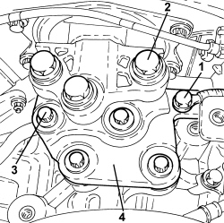

1008A42 POWER UNIT RIGID SUPPORT - GEARBOX SIDE - R.R.
- Path
- Procedures > 10 ENGINE > 1008 POWER UNIT SUPPORTS > 1008A POWER UNIT FASTENING > 1008A42 POWER UNIT RIGID SUPPORT - GEARBOX SIDE - R.R.
- Kind
- repair procedure (removal / refitting; the operation number is the code)
- Applies to
- all engines; all production periods
- Interactive page
- https://sloeber94.github.io/elrnDB-aBrrSpdr/en/#/946001797
Applies to: engines: 2.2 JTS; all production periods
 Removing
Removing
 Refitting
RefittingOp. 5530B52 BATTERY SUPPORT/DRIP TRAY - R.R
Op. 1008B30 GEARBOX SIDE SUPPORT FLEXIBLE MOUNTING(S) - REPLACE
Applies to: engines: 2.2 JTS; all production periods
Refitting
RemovingOp. 1008B30 GEARBOX SIDE SUPPORT FLEXIBLE MOUNTING(S) - REPLACE
Applies to: engines: 3.2 JTS; all production periods
- Refer to
Op. 1008B30 GEARBOX SIDE SUPPORT FLEXIBLE MOUNTING(S) - REPLACE
Applies to: engines: 2.4 JTD 20v; all production periods
Removing
RefittingOp. 5530B52 BATTERY SUPPORT/DRIP TRAY - R.R
- Position a hydraulic jack underneath the gearbox.
1. Undo the bolts fixing the gearbox side power unit flexible mounting to the rigid mount.
- Lower the power unit as necessary.
2. Undo bolts (2a) and remove power unit gearbox side rigid mount (2b).

Applies to: engines: 2.4 JTD 20v; all production periods
Refitting
Removing- Place the power unit gearbox side rigid mount in its housing and secure it by tightening the new bolts to the recommended torque.
Component | Fastening | dia | Value (daNm) | Validity |
|---|---|---|---|---|
Gearbox side power unit rigid support to gearbox | Bolt (to be replaced) | M12 | 6.3 ÷ 7.7 + 45° |
- Place the power unit back in its housing.
- Tighten to the specified torque the new bolts fixing the gearbox side flexible mounting to the rigid mounting.
Component | Fastening | dia | Value (daNm) | Validity |
|---|---|---|---|---|
Gearbox side flexible mounting to mount | Bolt (to be replaced) | M12 | 6.3 ÷ 7.7 + 45° |
- Remove the hydraulic jack from beneath the gearbox.
Applies to: engines: 3.2 JTS; all production periods; only with equipment: C.A.E.
Removing
RefittingOp. 5530B52 BATTERY SUPPORT/DRIP TRAY - R.R
Op. 7055B54 UNDER ENGINE PROTECTION/GUARD - R.R.
- Position the hydraulic jack underneath the gearbox.
1. Undo the bolt securing the battery earth lead.
2. Undo the nuts fixing the flexible mounting to the rigid mounting.
3. Undo the bolts fixing the rigid support to the gearbox.
4. Lower the power unit as necessary to remove the rigid support.

Applies to: engines: 3.2 JTS; all production periods; only with equipment: C.A.E.
Refitting
Removing- Place the rigid support in its housing and secure it to the gearbox tightening the new bolts to the recommended torque.
Component | Fastening | dia | Value (daNm) | Validity |
|---|---|---|---|---|
Gearbox side power unit rigid support | Bolt (to be replaced) | M10 | 4.5 ÷ 5.5 + 60° | 3.2 JTS CAE |
- Raise the power unit and connect the flexible mounting to the rigid support tightening the new bolts to the recommended torque.
Component | Fastening | dia | Value (daNm) | Validity |
|---|---|---|---|---|
Gearbox side support flexible mounting | Bolt (to be replaced) | M12 | (support side) 6.3 - 7.7 + 45° |
- Connect the earth lead to the rigid support and secure it using the bolt.
- Remove the hydraulic jack from beneath the gearbox.
Op. 7055B54 UNDER ENGINE PROTECTION/GUARD - R.R.
Topics linked from this page (4)
- 1008B30 GEARBOX SIDE SUPPORT FLEXIBLE MOUNTING(S) - REPLACE
- 5530B10 BATTERY - R+R
- 5530B52 BATTERY SUPPORT/DRIP TRAY - R.R
- 7055B54 UNDER ENGINE PROTECTION/GUARD - R.R.